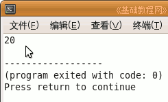
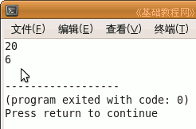

C 编程基础教程
作者：TeliuTe 来源：基础教程网
程序处理的数据，一般是通过外部键盘输入，先要放到内存的不同单元里，这就是变量，下面我们来看一个练习；
1、启动 Geany
1）点菜单“应用程序－编程－Geany”启动 Geany ，新建一个 c 源程序；
2）点菜单“文件－另存为”命令，以“bianliang”为文件名，保存文件到自己的文件夹；
2、输入程序代码
1）在下面的蓝色代码区域里，输入一行 int a;
| #include include <stdio.h> int main(int argc, char** argv) { int a; return 0; } |
2）这一行定义了一个变量 a，前面的 int 表示是一个存放整数的整型变量，字符型是 char，只能存一个字母，
这句相当于你有了一个水杯，是小的还是大的，根据需要去买；
2、给变量赋值
1）接着按一下回车键到下一行，输入 a = 20;
|
int a; a = 20; |
3）这一行是给变量 a 赋值，值最多能取多大要根据变量类型来定，
相当于往杯子里倒水，最多装满一杯，再多就会溢出来；
4）再到下一行，输入 printf ("%d",a); 显示一下 a 的值，相当于把杯子拿起来看看；
|
int a; a = 20; printf ("%d",a); |
保存、编译、生成，运行一下，看看显示的结果；

5）返回后继续输入下面的内容，重新给变量赋值，相当于又倒了一杯水；
|
int a; a = 20; printf ("%d\n",a); a = 6; printf ("%d",a); |
6）保存、编译、生成、运行后，这时 a 里存放的就是 6 了；

7）总的来说，变量就像一个盒子，里面可以装东西，可以重复使用，但是后装的内容会覆盖前面的；
定义和赋值可以一块儿进行，例如 int a = 20; 也是很好的；
| #include <stdio.h> int main(int argc, char** argv) { int a; a = 20; printf ("%d\n",a); a = 6; printf ("%d",a); return 0; } |
本节学习了在 c 程序中变量的基本操作，如果你成功地完成了练习，请继续学习下一课内容；
本教程由86团学校TeliuTe制作|著作权所有
基础教程网：http://teliute.org/
美丽的校园……
转载和引用本站内容，请保留作者和本站链接。